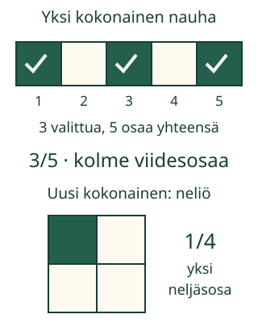
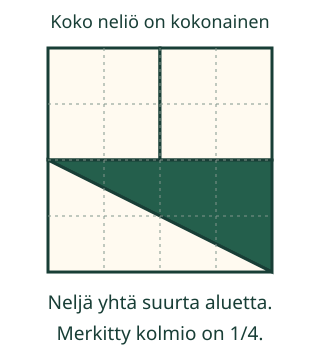

<link rel="stylesheet" href="lesson.css" />


<section data-teaching-step="1" data-lesson-role="teaching-step">
<section class="lesson-intro"><h2>Kuva kertoo osista, merkintä kertoo saman</h2><p>Aava merkitsee, kuinka suuri osa nauhasta on varattu retken kylttiin. Miten toinen lukija näkee saman määrän kuvasta ja merkinnästä?</p><p><strong>Yhdistän kuvan ja murtolukumerkinnän. Näytän kokonaisen ja siitä valitut osat.</strong></p></section>
</section>


<section>
<section data-teaching-step="2" data-lesson-role="teaching-step">
<h2>Kokonainen ensin</h2><p>Ota paperisuikale. Se on yksi kokonainen. Näytä sen molemmat päät. Kun suikale jaetaan viiteen yhtä suureen osaan, myös vaaleiksi jätetyt osat kuuluvat kokonaiseen.</p><figure data-lesson-role="worked-example"><figcaption>Kehys kertoo, mikä on kokonainen. Merkittyjen osien ei tarvitse olla vierekkäin.</figcaption></figure>
</section>

<section data-teaching-step="3" data-lesson-role="teaching-step">
<h3>Esimerkki: kolme viidestä</h3><p>Viisi yhtä suurta osaa yhteensä, kolme niistä merkitty: <strong>3/5, kolme viidesosaa</strong>. Ylempi luku kertoo, montako osaa valittiin. Alempi kertoo, moneenko yhtä suureen osaan kokonainen on jaettu. Murtoviiva erottaa luvut.</p>
</section>

<section data-teaching-step="4" data-lesson-role="teaching-step">
<h3>Esimerkki: yksi neljästä</h3><p>Kuvassa koko suuri neliö on yksi kokonainen. Siinä on neljä yhtä suurta pientä neliötä. Yksi niistä on merkitty: <strong>1/4, yksi neljäsosa</strong>. Pieni ruutu on nyt kokonaisen osa, ei tehtävän kokonainen.</p>
</section>

<section data-teaching-step="5" data-lesson-role="teaching-step">
<h3>Ansakohta: vaaleatkin lasketaan</h3><p>Ensimmäisessä nauhassa on kaksi vaaleaa osaa. Alaluku ei silti ole 2: myös kolme merkittyä osaa kuuluvat kokonaiseen. Alaluku on 5. </p>
</section>
</section>


<section data-teaching-step="6" data-lesson-role="teaching-step">
<p data-lesson-role="question">Ennusta: jos siirrän merkin yhdestä osasta toiseen, muuttuuko merkitty määrä?</p>
</section>


<section data-fraction-lesson>
  
<section data-teaching-step="7" data-lesson-role="teaching-step">
<section><h2>Seuraa merkinnän syntyä</h2><p>Kuva pysyy samana. Etene omaan tahtiin: kokonainen → kaikki osat → valitut osat → merkintä.</p><div data-fraction-demo-picture></div><p data-fraction-demo-caption aria-live="polite"></p><p data-fraction-demo-notation class="fraction-notation"></p><p><button type="button" data-fraction-demo-step>Seuraava vaihe</button> <button type="button" data-fraction-demo-reset>Alusta esimerkki</button></p></section>
</section>

  
<section data-teaching-step="8" data-lesson-role="teaching-step">
<section><h2>Rakenna merkinnän kuva</h2><div data-audience-columns><div data-visual-column><p data-build-task></p>
<div data-build-picture></div>
<p>Valitse tai poista osia painikkeilla. ✓ näyttää valitun osan myös ilman väriä.</p></div><div data-response-column><div data-build-parts></div>
<p><button type="button" data-build-check>Tarkista valinta</button> <button type="button" data-build-clear>Poista valinnat</button> <button type="button" data-build-next>Toinen kokonainen</button></p>
<p data-build-feedback role="status" aria-live="polite">Valitse osat ja tarkista.</p>
<details data-lesson-role="hint"><summary>Apua kuvan rakentamiseen</summary><p>Katso ensin alalukua: se kertoo kaikki yhtä suuret osat. Yläluku kertoo, kuinka monta niistä merkitään. Saat valita mitkä tahansa sopivan määrän osia. Yhteen osaan tulee vain yksi merkki.</p></details></div></div></section>
</section>

  
<section data-teaching-step="9" data-lesson-role="teaching-step">
<section><h2>Kirjoita kuvan merkintä</h2><div data-audience-columns><div data-visual-column><p data-read-context></p>
<div data-read-picture></div>
<p>Kirjoita ylös valittujen määrä ja alas kaikkien yhtä suurten osien määrä. Kaikki tieto on kuvassa; osia ei tarvitse napauttaa ennen vastausta.</p></div><div data-response-column><div class="fraction-entry"><label>Yläluku: valitut osat<input type="number" min="0" max="64" step="1" inputmode="numeric" data-read-top /></label><span aria-hidden="true">────────</span><label>Alaluku: osia yhteensä<input type="number" min="1" max="64" step="1" inputmode="numeric" data-read-bottom /></label></div>
<p><button type="button" data-read-check>Tarkista merkintä</button> <button type="button" data-read-next>Toinen kuva</button></p>
<p data-read-feedback role="status" aria-live="polite">Myös saman määrän ilmaiseva merkintä hyväksytään.</p>
<details data-lesson-role="hint"><summary>Apua merkintään</summary><p>Laske kokonaisen kaikki osat, myös vaaleat. Laske sitten merkittyjen osien määrä. Suoraan kuvan osat laskeva vastaus riittää; supistamista ei tarvita.</p></details></div></div></section>
</section>

</section>


<section data-teaching-step="10" data-lesson-role="teaching-step">
<section><h2>Neljä palaa ei aina tarkoita neljäsosia</h2><p>Jaa samanlevyinen suikale neljään alueeseen: kolme lyhyttä aluetta ja yksi kolme kertaa niin pitkä. Yksi lyhyt alue ei ole neljäsosa suikaleen koosta. Koko suikaleeseen mahtuu kuusi yhtä pitkää pientä apuosaa, joista lyhyt alue on yksi.</p><p>Älä siis päättele murtolukua pelkästä palojen määrästä, jos palat eivät ole yhtä suuria. Silti jokin erikokoiseen jakoon kuuluva pala voi olla juuri neljäsosa: sen koko ratkaisee. Vertaamme tässä samanlevyisiä paperisuikaleita.</p></section>
</section>


<section data-teaching-step="11" data-lesson-role="teaching-step">
<details data-lesson-role="teaching-step"><summary>Lisätutkimus: eri muoto, yhtä suuri osa</summary><figure data-lesson-role="worked-example"><figcaption>Kaikki neljä aluetta peittävät yhtä suuren osan kokonaisesta. Yhtä suuri ei aina tarkoita samanmuotoista.</figcaption></figure><p>Leikatkaa aikuisen kanssa vastaava paperimalli. Alapuolen kumpikin kolmio on puolet kahdeksan pienen apuruudun suorakulmiosta: sen ala on yhtä suuri kuin neljän apuruudun. Yläosan kumpaankin neliöön mahtuu myös neljä apuruutua. Jokainen neljästä palasta on siis 1/4 koko neliöstä. Aikuinen auttaa tämän lisävertailun tutkimisessa.</p><p>Voit myös merkitä kaikki viisi nauhan osaa: 5/5 on yksi kokonainen. Tämä on vapaaehtoinen jatko.</p></details>
</section>


<details class="teacher" data-lesson-role="teacher-note"><summary>Opettajalle: silta, työskentely ja rajat</summary><p>Vuosiluokat 3–6. Välitön vaadittu esitieto on M-FRAC-01, yhtä suuriin osiin jakaminen. Palauta kokonainen ja tasajako tarvittaessa. Numeroita 1–6 ja pienten määrien laskemista käytetään; aikuinen voi lukea ohjeet ja auttaa niiden tulkitsemisessa. Erillistä osoittaja- ja nimittäjäsanaston hallintaa ei vaadita.</p><p>Harjoituksessa oppilas rakentaa mallin valitsemalla osat ja tekee käänteisen yhteyden kuvasta merkintään. Valitut osat voivat olla missä tahansa. Lippumallissa kokonainen on nimetty kuuden lipun joukko; siinä verrataan lukumääriä, ei kuvien pinta-alaa.</p><p>Ohjelma hyväksyy myös samanarvoisen merkinnän, kuten 1/3 kuvassa 2/6. Palaute näyttää lisäksi kuvan oman jaon mukaisen merkinnän. Samanarvoinen vastaus ei yksin osoita kaikkien kuvan osien laskemista. Ei pisteitä, tallennusta, palkintoja tai itsenäisen osaamisen päätelmää.</p><p>Offline: taita tai käytä valmiiksi tasajaettua samanlevyistä suikaletta. Merkitse eri paikoissa olevat kolme viidesosaa ja anna parin kertoa, mikä kokonainen on. Piirrä myös yksi neljäsosa neliöön. Ruudun toiminta ei todenna fyysistä jakamista, piirtämistä, sanallista sujuvuutta tai pysyvää osaamista.</p><p>Rajaus: yhden kokonaisen pienet murto-osat. Ei laskutoimituksia, suuruusjärjestystä, prosentteja, sekalukuja, laventamis- tai supistamisalgoritmia. Tarkempi lukujen tehtävien yleistäminen jatkuu M-FRAC-03:ssa. Lähteiden laajempia murtolukutavoitteita ei väitetä tässä arvioiduiksi.</p></details>


<section data-teaching-step="12" data-lesson-role="teaching-step">
<section><h2>Lopuksi</h2><p>Näytä kokonainen. Mistä kuvan merkinnän kumpikin luku tuli? Vastaa osoittamalla, paperilla tai omin sanoin.</p></section>
</section>


